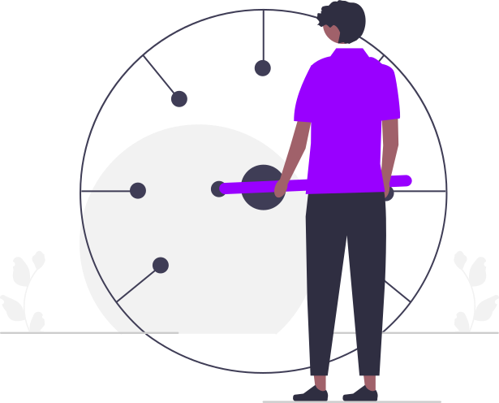

TAKE A LOOK, PICS SPOT!


A Smart, Web Developer
Karthigeyan is a college student who is passionate about creating innovative and user-friendly websites. With a strong foundation in programming languages such as HTML, CSS, and JavaScript, He constantly seek,bring to expand his knowledge and skills in order to stay current with the latest web development trends and technologies.
In addition to technical proficiency, Karthigeyan has a keen eye for design and is skilled in creating visually appealing and intuitive interfaces. He understands the importance of user experience and strive to create websites that are not only functional, but also enjoyable to use
Throughout his academic career, Karthigeyan has worked on numerous projects, both individually and as part of a team. He enjoy collaborating with others and skilled in communicating technical concepts to non-technical stakeholders.
In his free time, he enjoys experimenting with new technologies and tools, attending hackathons, and contributing to open source projects. His ultimate goal is to become a successful web developer who can create meaningful and impactful websites that make a difference in the world.
CREATIVE MINDSET

FAST WORKER
SMART AND SKILLED
ON TREND